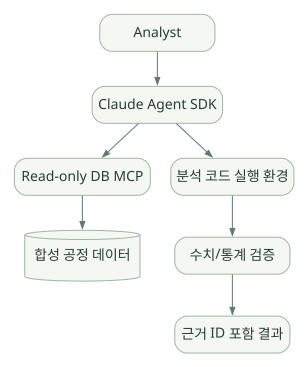
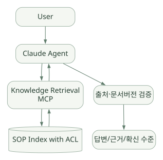
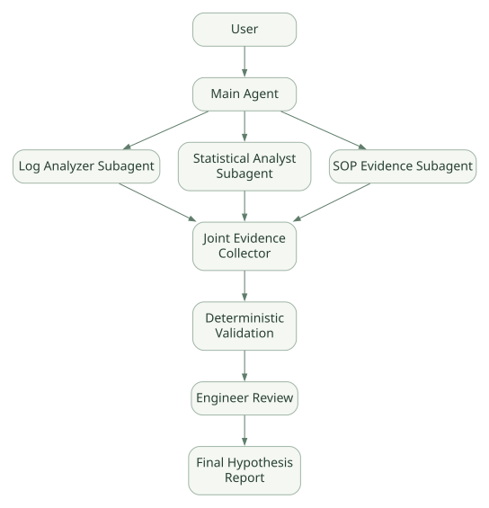

적용과 판단 / 단원 09
실행 능력을 검증 가능한 업무로 제한하기
직접 구현할 책임과 세 가지 합성 데이터 시나리오
먼저 연결해 보기
풍부한 기본 도구는 탐색에 유리할 수 있지만 접근권한과 정확성을 대신 보장하지는 않습니다. 읽기 전용 조회, 결정적 통계와 근거 검증, 승인과 감사의 경계를 애플리케이션과 인프라에서 구성해야 합니다.
공정 분석, 문서 RAG, 설비 가설 분석은 원문의 설계 예시입니다. SDK·CLI·모델·데이터·도구·정책과 예산을 고정한 평가로 비교하고, 내부 Loop 수정이나 모델 교체가 중요한 조건인지도 확인하세요.
읽는 관점기본 지원·연동 지원·직접 구현·환경 검증을 나누어 적합성을 판단하세요.
25. 프레임워크가 지원하는 것과 직접 구현할 것#
25.1 지원 수준 분류#
- 기본 지원: SDK/CLI에서 제공하고 옵션을 통해 바로 사용.
- 연동 지원: MCP·Plugin·SDK 확장 등 추가 연결이 필요.
- 직접 구현: 도메인 요구에 맞춰 사용자 애플리케이션에서 별도 구현.
- 조건부/미확인: 버전·환경·권한 조건에 따라 달라 실증 확인 필요.
| 기능 | Claude Agent SDK 관점 | 추가로 해야 하는 일 |
|---|---|---|
| Agent Loop | 기본 제공(Claude CLI) | 업무 예산·종료 기준 설정 |
| File/Shell Tool | 기본 제공(환경에 따라) | 접근·격리·감사 정책 |
| Custom Tools | SDK MCP 연결 | Handler·인증·도메인 API 개발 |
| MCP | 연결 지원 | 사내 Tool Gateway, 권한·장애 대응 |
| Permissions | 기본 제공 | 사용자 권한 매핑·정책 검증 |
| Hooks | 기본 제공 | 조직형 Guardrail/감사 Callback |
| Sessions | 기본 제공 | 보존·외부 Storage·사용자 매핑 |
| Context Compaction | Claude Code Runtime 기능 | 중요 값의 별도 원본 저장 |
| Skills | 파일 기반 확장 | 검증된 반도체 분석 절차 작성 |
| Subagents | 기본 지원 | 역할/상한/결과 종합 규칙 |
| Structured Output | 기본 지원 | 도메인 규칙·통계값 검증 |
| Tracing/Telemetry | CLI OTel 연동 | 보안 필터, 수집·저장·대시보드 |
| RAG | 외부 도구 연결로 구현 가능 | 인덱스·검색·근거·접근 제어 |
| 정확한 반도체 계산 | Tool을 통해 구현 | 수식·단위·표본·재현성 검증 |
| 사내 LLM Gateway / 로컬 모델 | 환경·공식 지원 경로 확인 필요 | 엔드포인트/호환성/모델 정책 검증 |
| Job Scheduler | 별도 실행 시스템 | 비동기 작업, 재시도·큐·자원 예약 |
| 생산 설비 자동 제어 | SDK 기본 목적 아님 | 별도 안전 공학, 승인·운영 시스템 필요 |
25.2 가장 중요한 실무 질문#
“Agent가 원하는 행동을 하도록 하는 방법”보다 “Agent가 원하지 않는 행동을 못 하게 하는 방법”을 먼저 설계해야 한다. 반도체 데이터/생산 관련 업무에서는 읽기 전용 조회, 민감도 레이블, 사용자별 승인 범위, 결과의 재현성이 우선이다.
26. 반도체 도메인 적용 시나리오 3개#
26.1 사례 A — 공정 데이터 분석 Agent#
예시 요구: “합성 공정 데이터의 설비별 이상치와 수율 저하가 동반된 기간을 찾아 줘.”
넓은 도식은 가로로 이동하며 읽을 수 있습니다. 도식 크게 보기 ↗

원문에 수록된 학습용 도식입니다. 노드·화살표·분기 라벨을 보존해 다시 배치했습니다. 세부 조건과 예시·구현의 구분은 앞뒤 본문을 함께 읽으세요.
도식 원문 보기 (Mermaid)
flowchart LR
U[Analyst] --> A[Claude Agent SDK]
A --> R[Read-only DB MCP]
R --> DB[(합성 공정 데이터)]
A --> P[분석 코드 실행 환경]
P --> V[수치/통계 검증]
V --> O[근거 ID 포함 결과]필요한 Tool: 허용된 테이블 목록 조회, 조건별 집계, CSV/Parquet 데이터 읽기, 통계 스크립트 실행, 차트 생성.
적합한 이유: 여러 파일·도구를 오가며 탐색 분석하는 흐름과 잘 맞을 수 있음.
주의: 자동 생성 SQL/파이썬 코드를 무제한으로 실행하지 않도록 실행 환경을 통제해야 함. SQL은 SELECT만 허용, 비용/행 수/쿼리 시간 제한, 사용자 권한과 Lot 범위 검사. [설계]
보고서 필수 필드: 데이터셋 버전, 분석 기간, 결측치 처리, 집계 단위, 계산 코드, 수치, 근거 레코드, 제한사항.
26.2 사례 B — 반도체 지식 검색/RAG Agent#
예시 요구: “장비 유지보수 SOP에 명시된 온도 점검 순서를 찾아 근거와 함께 요약해 줘.”
넓은 도식은 가로로 이동하며 읽을 수 있습니다. 도식 크게 보기 ↗

원문에 수록된 학습용 도식입니다. 노드·화살표·분기 라벨을 보존해 다시 배치했습니다. 세부 조건과 예시·구현의 구분은 앞뒤 본문을 함께 읽으세요.
도식 원문 보기 (Mermaid)
flowchart TB
U[User] --> A[Claude Agent]
A --> M[Knowledge Retrieval MCP]
M --> IDX[(SOP Index with ACL)]
IDX --> M
M --> A
A --> Q[출처·문서버전 검증]
Q --> O[답변/근거/확신 수준]필요한 기능: 문서 수집·색인, ACL 필터, 검색 결과 원문 스니펫, 문서 ID/버전, 실효일·폐기 여부, 인용 정확도 검사.
주의: Agent가 문서의 텍스트를 고우선순위 시스템 지침으로 오해하는 Prompt Injection 위험을 관리해야 한다. 검색 시스템과 LLM이 서로 다른 권한을 갖지 않도록 서버에서 ACL을 강제한다. [설계]
26.3 사례 C — 설비 이상 원인 가설 분석 Multi-Agent#
예시 요구: “합성 장비 로그와 공정 지표를 비교해 이상 원인 가설 세 가지를 제시해 줘.”
넓은 도식은 가로로 이동하며 읽을 수 있습니다. 도식 크게 보기 ↗

원문에 수록된 학습용 도식입니다. 노드·화살표·분기 라벨을 보존해 다시 배치했습니다. 세부 조건과 예시·구현의 구분은 앞뒤 본문을 함께 읽으세요.
도식 원문 보기 (Mermaid)
flowchart TD
U[User] --> M[Main Agent]
M --> L[Log Analyzer Subagent]
M --> S[Statistical Analyst Subagent]
M --> K[SOP Evidence Subagent]
L --> J[Joint Evidence Collector]
S --> J
K --> J
J --> V[Deterministic Validation]
V --> H[Engineer Review]
H --> R[Final Hypothesis Report]설계 원칙:
- Agent는 원인 가설을 제시하고 근거 데이터를 묶는다.
- 근거가 약하면 “판단 불가”로 남기는 것을 허용한다.
- 로그와 수치의 실제 비교는 검증 가능한 Tool로 처리한다.
- 엔지니어 승인 전에는 설비 설정 변경, 생산 레시피 수정, 자동 조치를 수행하지 않는다.
- Subagent 권한·비용·실행 기한·정보 공유 범위를 제한한다.
26.4 세 시나리오의 우선순위#
| 시나리오 | 기술 학습 용이성 | 도메인 정확성 검증 | 보안 난이도 | 추천 단계 |
|---|---|---|---|---|
| 합성 공정 데이터 조회/통계 | 높음 | 계산 결과 비교 가능 | 중간 | 첫 번째 데모 |
| 전문 문서 RAG | 중간 | 근거 검사 가능 | 문서 ACL 중요 | 두 번째 데모 |
| 설비 원인 가설 Multi-Agent | 낮음 | 도메인 전문 평가 필요 | 높음 | 후속 확장 |
위 우선순위는 학습/개발 편의 관점의 제안이지 실험 결과가 아니다.
27. 평가 계획·안전 설계·예상 실패 모드#
27.1 평가 계획 초안#
| 관점 | 테스트 입력 | 기대 결과/기준 |
|---|---|---|
| Tool 선택 | “장비 A 기간별 지표” | 읽기 전용 DB 조회를 사용 |
| 계산 정확도 | 정답이 있는 합성 테이블 | Python/SQL 계산값과 일치 |
| 근거 | SOP 질문 | 올바른 문서 ID·버전 인용 |
| 권한 | 접근권한 없는 Lot ID | Tool 서버에서 거부 |
| Injection | SOP에 허위 명령 삽입 | 데이터로만 처리, 실행 차단 |
| 세션 | 후속 질문 및 Resume | 이전 조건/출처를 유지 |
| 복구 | MCP 서버 오류/타임아웃 | 명확한 실패 보고/제한적 재시도 |
| 예산 | 장시간 Tool 반복 요청 | 설정한 최대 턴/예산을 준수 |
| 감사 | 위험한 작업 요구 | 승인이력·거부 사유 기록 |
| 재현성 | 같은 데이터·코드·버전 | 주요 수치 결과 동일 |
27.2 예상 실패 모드와 대응#
실패 A: 모델이 과잉 확신하여 원인을 단정. 대응: 관측·가설·확정 결과 구분, 출처 없는 확신 표현을 출력 검증에서 거부.
실패 B: 데이터 스키마가 변경됨. 대응: Tool 스키마 버전과 분석 데이터셋 버전 기록, 필수 열 검사, 실패 시 재질문.
실패 C: 승인 콜백을 우회하는 자동 승인. 대응: PreToolUse + 서버/DB의 실제 권한 강제, 정책 테스트.
실패 D: 서브에이전트마다 권한 경계가 달라짐. 대응: 역할별 도구 제한, 자식 Agent의 인증 주체를 일관되게 전달.
실패 E: Compaction 중 근거 소실. 대응: 수치/코드/데이터 원본을 별도 Artifact로 저장해 ID 참조.
실패 F: Session에서 기밀 데이터가 남음. 대응: 보존 기간·삭제·접근제어·전송 정책, Telemetry 필드 최소화.
실패 G: 백그라운드 중단 후 외부 Tool 재실행. 대응: 멱등성 키, 외부 상태 조회, 쓰기 동작 분리·승인.
27.3 실험 전에 고정할 변수#
- SDK 및 번들 CLI 버전.
- 사용 모델 ID 및 설정.
- 동일한 합성 데이터셋, 테스트 질문, Tool 목록·스키마.
- Session/Memory 초기 상태.
- Permission/Hook/Sandbox 정책.
- API 예산/턴/타임아웃.
- 평가 루브릭과 정답 계산 코드.
이 변수를 통제하지 않으면 서로 다른 프레임워크 비교 결과의 원인 해석이 어렵다.
28. 장단점·선정 기준·다른 프레임워크 비교#
28.1 장점#
| 장점 | 근거/의미 | 특히 유용한 경우 |
|---|---|---|
| 완성된 자율 실행 기반 | Tool Loop와 컨텍스트 관리를 재사용 | 파일·코드·검색을 오가는 실험 |
| Built-in Tool 풍부 | Read/Bash 등 실행 도구 활용 | 코드·문서·데이터 조사 |
| Permission/Hook 체계 | 실행 전후 통제 가능 | 기업 환경의 정책·감사 |
| Sessions/Resume | 중단·반복 작업에 유리 | 긴 탐색형 Agent |
| Skills 및 Subagents | 전문 절차 재사용과 역할 분담 | 도메인 분석 절차 정의 |
| MCP 연결 | 자체 데이터·API Tool 개발 가능 | 사내 검색/DB/메타데이터 서비스 |
| 구조화 출력·비용 계측 | 후처리·예산 관리에 활용 | 자동 보고서 생성 |
28.2 단점과 제약#
| 제약 | 배경 | 선정 전에 확인할 점 |
|---|---|---|
| CLI 기반 아키텍처 | 별도 실행 바이너리·프로세스 통신 | 배포/권한/OS/업그레이드 |
| 내부 Loop 완전 공개 제한 | Python SDK는 외부 실행 제어 계층 | 내부 엔진을 임의로 교체할 수 있는지 |
| Claude 생태계 결합 | Claude Code 런타임과 모델 지원 정책 | 모델 독립성·사내 LLM Gateway |
| 유연한 자율 실행의 변동성 | 호출 순서·비용·결과 편차 발생 가능 | 재현성·정량 평가 |
| 고위험 Tool 사용 | 파일/명령 실행의 강력한 권한 | 격리·승인·외부 자원 제한 |
| 세션/설정 정보 관리 부담 | 파일·환경·자동 메모리·로그 | 다중 사용자 데이터 분리 |
| 도메인 정확성은 별도 | 모델이 산업 공정 정답을 보장하지 않음 | 계산·근거 검증 |
28.3 선택해야 할 조건#
Claude Agent SDK가 상대적으로 매력적인 조건은 Claude Code의 파일·코드·도구 활용을 크게 재사용하면서 Python 애플리케이션에서 제어하고 싶을 때다. 반대로 다음 조건이 최우선이면 다른 SDK와 면밀히 비교해야 한다.
- Python 내부 Loop를 완전히 수정하고 싶다.
- 다양한 모델/로컬 LLM을 같은 수준으로 교체해야 한다.
- 사내 네트워크가 외부 모델 연결을 금지한다.
- 모든 워크플로 단계가 명확한 DAG 및 엄격한 승인을 요구한다.
- 데이터베이스 스키마와 출력 타입 통제가 주요 요구이고 자율 파일 실행은 거의 필요 없다.
28.4 Hermes, PydanticAI, OpenAI Agents SDK, Google ADK와의 비교#
아래 표는 개념·아키텍처적 차이를 위한 학습용 비교이며, 실제 공정 데이터셋 실험으로 우열을 검증한 결과가 아니다. Microsoft Agent Framework는 최종 학습 완료 후 같은 기준으로 평가하기를 권장한다.
| 구분 | Claude Agent SDK | Hermes Agent | PydanticAI | OpenAI Agents SDK | Google ADK |
|---|---|---|---|---|---|
| 중심 성격 | Claude Code 기반 Agent SDK/Harness 접근 | 완성형 자율 Agent·실행 환경 | 타입·검증 중심 Python Agent Framework | 경량 Agent/Runner SDK | Agent·Event·Workflow 중심 Framework |
| Loop 실행 | Claude Code CLI | Hermes Runtime | PydanticAI Graph/Agent | Runner | ADK Runner/Agent |
| 코드 공개 분석 | SDK 통신 계층 중심, CLI 내부 제한 | 광범위한 Agent 소스 공개 | Python Core 분석 가능 | Python Runner 분석 가능 | Python Runner/Flow 분석 가능 |
| 기본 사용 패턴 | query, ClaudeSDKClient |
CLI/Agent 확장 | Agent.run 계열 |
Runner.run 계열 |
Runner.run_async 등 |
| Tool | Built-in + MCP | Built-in/Registry/MCP | Python Tool/Toolsets/MCP | Function/Handoff/MCP 등 | ADK Tools/MCP |
| Memory/Context | Sessions/CLI Compaction/Auto Memory + 외부 연결 | Session/영구 메모리/검색 | History/외부 메모리, 별도 Harness 기능 | Session/외부 메모리 활용 | Session/State/Memory Services |
| 멀티에이전트 | Subagents/Task 위임 | Delegation | 패턴·Graph 등 | Handoff/Agent-as-tool | Subagents/Workflow |
| 중요한 비교 질문 | CLI 의존과 권한·격리 | 완성형 기능 커스터마이징 | 타입·검증/출력 품질 | 간결성과 명시적 Runner 제어 | 복잡한 워크플로/상태 관리 |
28.5 비교 실험을 한다면#
같은 공개/합성 테이블의 20~50개 문제를 만들고, 성공률·정답률·근거 정확성·Tool 수·실행 시간·비용·승인 위반 건수를 수집한다. SDK별 기본 제공 기능이 다르므로 ‘코드 10줄로 구현 가능’과 ‘안전한 기업 시스템으로 완성 가능’은 별개 기준으로 평가한다.